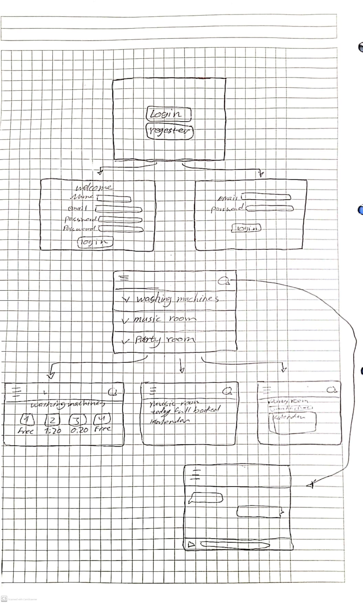
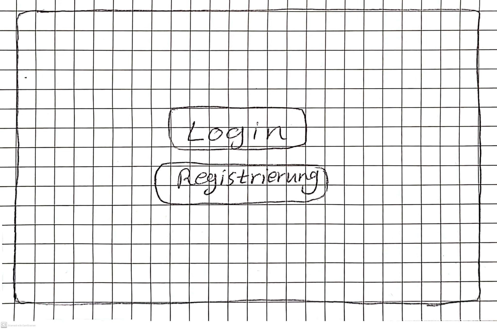
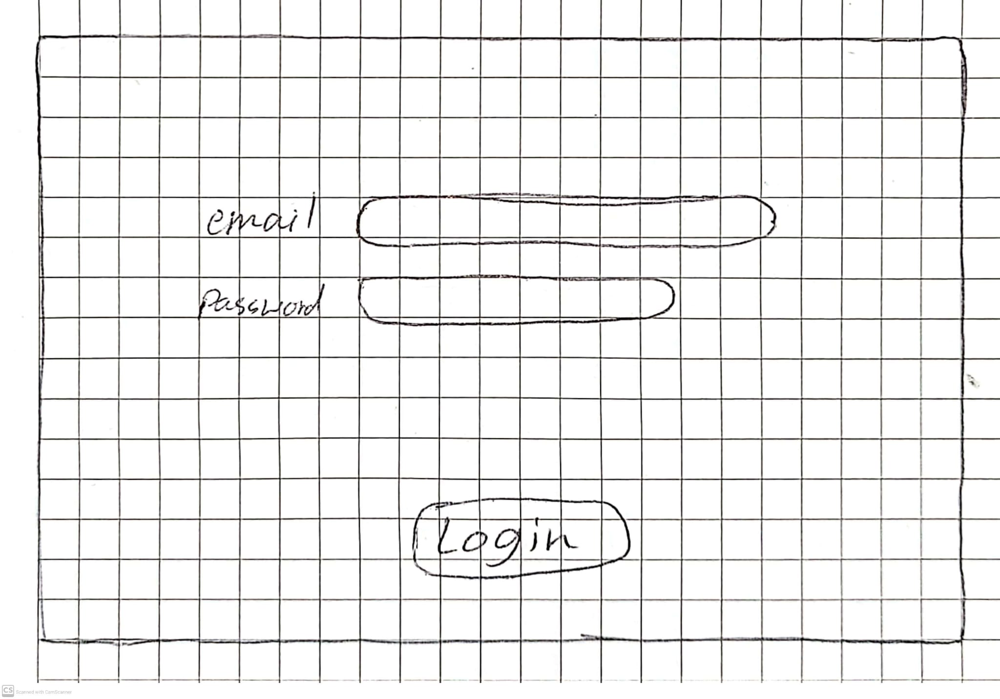
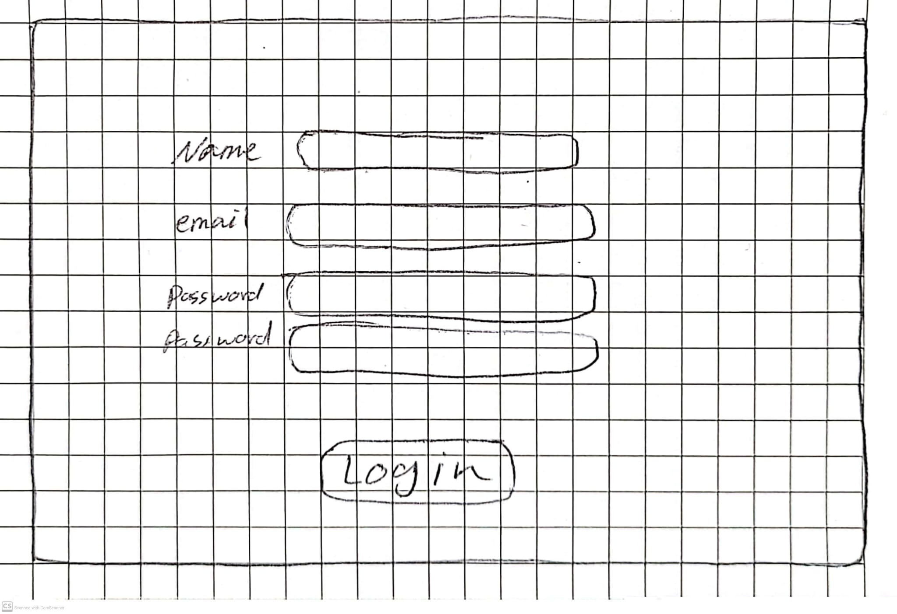
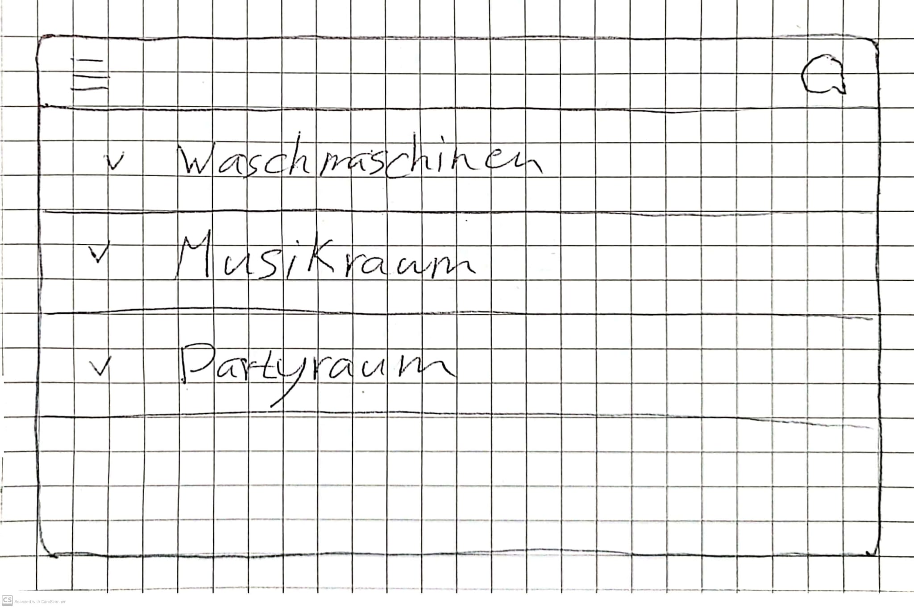
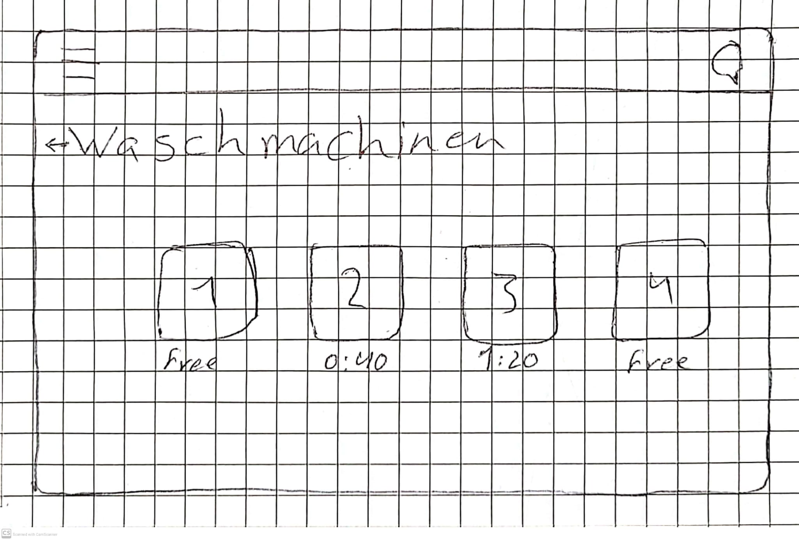
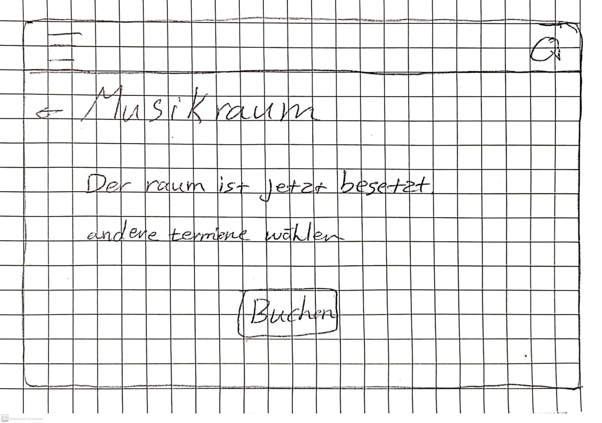
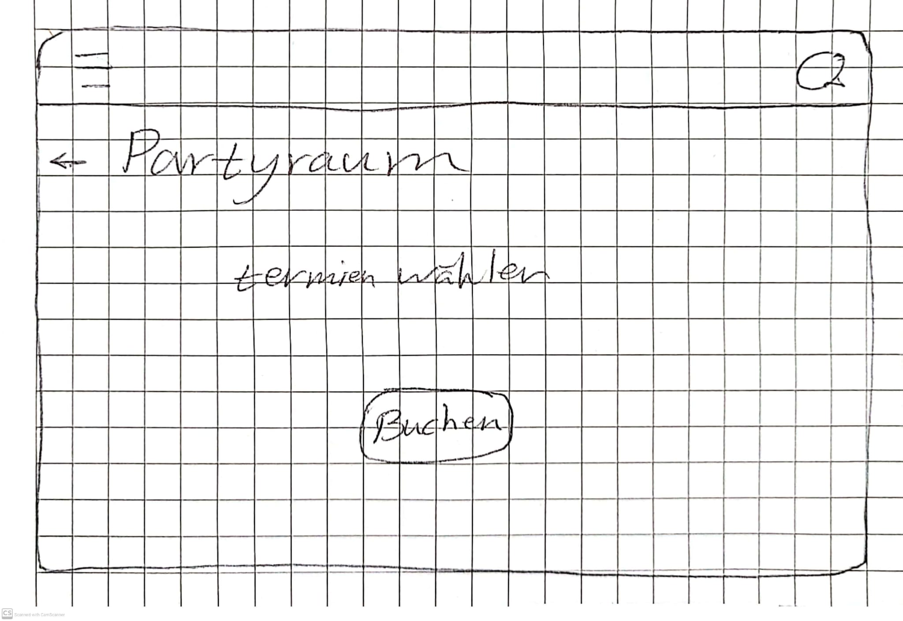
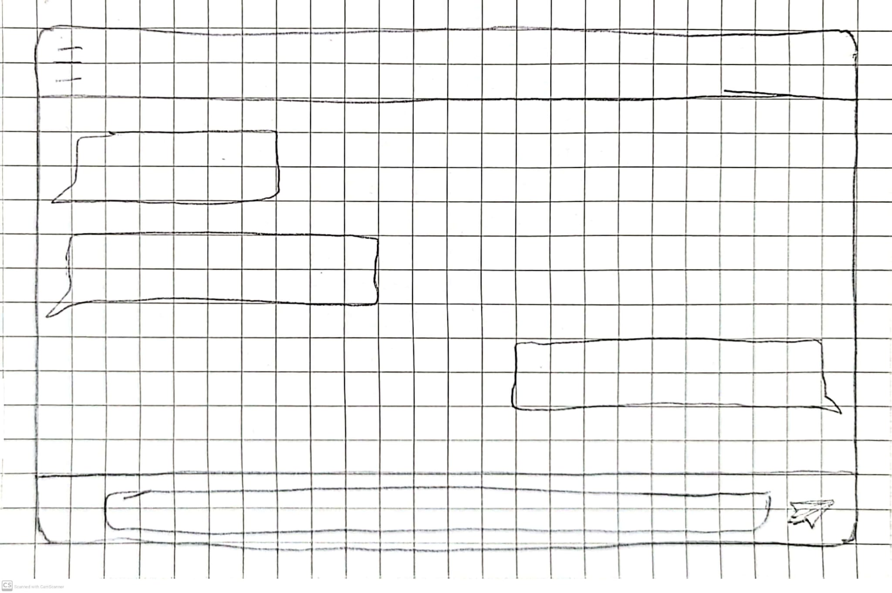

Grundidee
Die Webseite soll den Alltag im Wohnheim einfacher organisieren.
Bewohner können wichtige Informationen online sehen und gemeinsame Ressourcen besser nutzen.
Zielgruppe
Die Anwendung richtet sich an Studierende, die in einem Wohnheim leben.
Problem
- Ist eine Waschmaschine frei?
- Wie lange läuft die Waschmaschine noch?
- Ist der Partyraum schon reserviert?
- Wo kann man wichtige Nachrichten sehen?
Lösung
Die Webseite bietet eine zentrale Plattform für alle Bewohner.
Dort können sie Informationen sehen, Räume buchen und Nachrichten schreiben.
2. Storybord

Das Storyboard zeigt den Ablauf der Webseite.
Zuerst kann sich der Benutzer registrieren oder einloggen. Danach kommt er zur Hauptseite mit den wichtigsten Funktionen.
Dort kann er den Status der Waschmaschinen sehen, den Musikraum oder Partyraum reservieren und Nachrichten schreiben oder lesen.
3. Papierprototyp
-
Startseite

Bild öffnen
Auf der ersten Seite sieht der Benutzer zwei Möglichkeiten: Login oder Registrieren.
-
Login

Bild öffnen
Wenn der Benutzer bereits ein Konto hat, kann er sich über die Login-Seite anmelden.
-
Registrierung

Bild öffnen
Wenn der Benutzer auf Registrieren klickt, öffnet sich ein Formular. Dort gibt der Benutzer seine Daten ein
-
Dashboard

Bild öffnen
Nach dem Login kommt der Benutzer zur Hauptseite. Dort gibt es ein Menü mit den wichtigsten Funktionen der Webseite
-
Waschmaschinen

Bild öffnen
Auf der Waschmaschinen-Seite sieht der Benutzer den aktuellen Status der Waschmaschinen.
-
Musikraum

Bild öffnen
Auf der Musikraum-Seite kann der Benutzer den Musikraum reservieren. Er kann sehen, ob der Raum frei ist, und einen Termin buchen.
-
Partyraum

Bild öffnen
Auf der Partyraum-Seite kann der Benutzer den Partyraum reservieren. Der Benutzer kann einen Zeitraum auswählen und die Reservierung speichern.
-
Chat-Funktion

Bild öffnen
Über diese Funktion können die Bewohner miteinander kommunizieren, Fragen stellen und wichtige Informationen teilen.
{kind=link}
{kind=link}
{kind=link}
{kind=link}
{kind=link}
{kind=link}
{kind=link}
{kind=link}